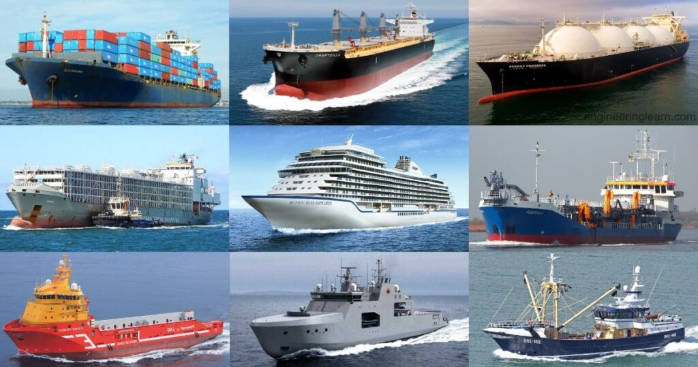

Ships-any large floating vessel capable of crossing open waters, as opposed to a boat, which is generally a smaller craft The term formerly was applied to sailing vessels having three or more masts; in modern times it usually denotes a vessel of more than 500 tons of displacement.
The great majority of ships that are neither military vessels nor yachts can be divided into several broad categories: cargo carriers, passenger carriers, tanker ships, bulk carriers, etc.Each category can be subdivided, with the first category containing by far the greatest number of subdivisions.
